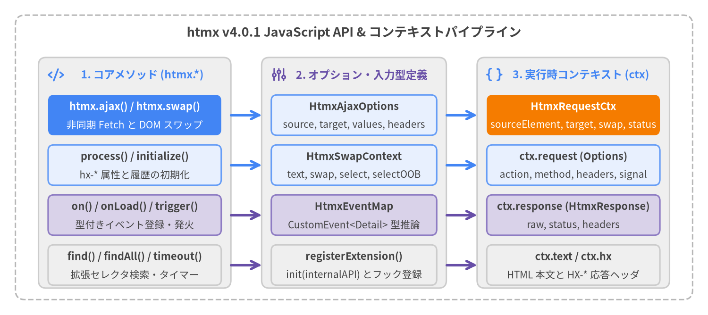

JavaScript API と TypeScript 型定義
htmx は宣言的な HTML 属性を中心に設計されていますが、htmx v4.0.1 ではグローバルな htmx オブジェクトを通じて、プログラムからの AJAX リクエスト発行、動的な DOM 初期化、拡張 CSS セレクタ検索、型付きイベントリスナー登録、および拡張機能（Extension）登録のための JavaScript API を提供しています。すべての TypeScript 型定義は src/htmx.d.ts に同梱されています。

Source Code
from drawlib.canvas import save, setup
from drawlib.icons import phosphor
from drawlib.lines import line
from drawlib.shapes import rectangle
from drawlib.styles import Styles
from drawlib.text import text
setup(width=184, height=82, dpi=150)
# Outer container
rectangle((92, 41), width=176, height=74, style=Styles.MutedDashed.patch(shape_r=2.5))
text(
(92, 73.5),
"htmx v4.0.1 JavaScript API & コンテキストパイプライン",
style=Styles.DarkBold.patch(text_size=13.0),
)
# Column 1: Core JS Methods
rectangle((35, 37), width=50, height=60, style=Styles.Neutral.patch(shape_r=2.0))
phosphor.code((14.5, 62.5), width=4.2, style=Styles.PrimaryBold)
text((37, 62.5), "1. コアメソッド (htmx.*)", style=Styles.PrimaryBold.patch(text_size=11.0))
rectangle((35, 52), width=45, height=10.5, style=Styles.PrimaryFlat.patch(shape_r=1.5))
text((35, 54.2), "htmx.ajax() / htmx.swap()", style=Styles.WhiteBold.patch(text_size=10.5))
text((35, 49.5), "非同期 Fetch と DOM スワップ", style=Styles.White.patch(text_size=10.0))
rectangle((35, 39), width=45, height=10.5, style=Styles.PrimaryNeutral.patch(shape_r=1.5))
text((35, 41.2), "process() / initialize()", style=Styles.DarkBold.patch(text_size=10.5))
text((35, 36.5), "hx-* 属性と履歴の初期化", style=Styles.Dark.patch(text_size=10.0))
rectangle((35, 26), width=45, height=10.5, style=Styles.SecondaryNeutral.patch(shape_r=1.5))
text((35, 28.2), "on() / onLoad() / trigger()", style=Styles.DarkBold.patch(text_size=10.5))
text((35, 23.5), "型付きイベント登録・発火", style=Styles.Dark.patch(text_size=10.0))
rectangle((35, 13), width=45, height=10.5, style=Styles.Neutral.patch(shape_r=1.5))
text((35, 15.2), "find() / findAll() / timeout()", style=Styles.DarkBold.patch(text_size=10.5))
text((35, 10.5), "拡張セレクタ検索・タイマー", style=Styles.Dark.patch(text_size=10.0))
# Column 2: Input & Options Interfaces
rectangle((92, 37), width=48, height=60, style=Styles.Neutral.patch(shape_r=2.0))
phosphor.sliders((72.5, 62.5), width=4.2, style=Styles.SecondaryBold)
text((94, 62.5), "2. オプション・入力型定義", style=Styles.SecondaryBold.patch(text_size=11.0))
rectangle((92, 52), width=43, height=10.5, style=Styles.PrimaryNeutral.patch(shape_r=1.5))
text((92, 54.2), "HtmxAjaxOptions", style=Styles.DarkBold.patch(text_size=10.5))
text((92, 49.5), "source, target, values, headers", style=Styles.Dark.patch(text_size=10.0))
rectangle((92, 39), width=43, height=10.5, style=Styles.PrimaryNeutral.patch(shape_r=1.5))
text((92, 41.2), "HtmxSwapContext", style=Styles.DarkBold.patch(text_size=10.5))
text((92, 36.5), "text, swap, select, selectOOB", style=Styles.Dark.patch(text_size=10.0))
rectangle((92, 26), width=43, height=10.5, style=Styles.SecondaryNeutral.patch(shape_r=1.5))
text((92, 28.2), "HtmxEventMap", style=Styles.DarkBold.patch(text_size=10.5))
text((92, 23.5), "CustomEvent<Detail> 型推論", style=Styles.Dark.patch(text_size=10.0))
rectangle((92, 13), width=43, height=10.5, style=Styles.Neutral.patch(shape_r=1.5))
text((92, 15.2), "registerExtension()", style=Styles.DarkBold.patch(text_size=10.5))
text((92, 10.5), "init(internalAPI) とフック登録", style=Styles.Dark.patch(text_size=10.0))
# Column 3: Runtime Context (HtmxRequestCtx)
rectangle((149, 37), width=50, height=60, style=Styles.Neutral.patch(shape_r=2.0))
phosphor.brackets_curly((128.5, 62.5), width=4.2, style=Styles.PrimaryBold)
text((151, 62.5), "3. 実行時コンテキスト (ctx)", style=Styles.PrimaryBold.patch(text_size=11.0))
rectangle((149, 52), width=45, height=10.5, style=Styles.AccentFlat.patch(shape_r=1.5))
text((149, 54.2), "HtmxRequestCtx", style=Styles.WhiteBold.patch(text_size=10.5))
text((149, 49.5), "sourceElement, target, swap, status", style=Styles.White.patch(text_size=10.0))
rectangle((149, 39), width=45, height=10.5, style=Styles.PrimaryNeutral.patch(shape_r=1.5))
text((149, 41.2), "ctx.request (Options)", style=Styles.DarkBold.patch(text_size=10.5))
text((149, 36.5), "action, method, headers, signal", style=Styles.Dark.patch(text_size=10.0))
rectangle((149, 26), width=45, height=10.5, style=Styles.SecondaryNeutral.patch(shape_r=1.5))
text((149, 28.2), "ctx.response (HtmxResponse)", style=Styles.DarkBold.patch(text_size=10.5))
text((149, 23.5), "raw, status, headers", style=Styles.Dark.patch(text_size=10.0))
rectangle((149, 13), width=45, height=10.5, style=Styles.Neutral.patch(shape_r=1.5))
text((149, 15.2), "ctx.text / ctx.hx", style=Styles.DarkBold.patch(text_size=10.5))
text((149, 10.5), "HTML 本文と HX-* 応答ヘッダ", style=Styles.Dark.patch(text_size=10.0))
# Connectors between columns
line((60, 52), (68, 52), arrow_head="->", style=Styles.PrimaryBold)
line((60, 39), (68, 39), arrow_head="->", style=Styles.PrimaryBold)
line((60, 26), (68, 26), arrow_head="->", style=Styles.SecondaryBold)
line((60, 13), (68, 13), arrow_head="->", style=Styles.SecondaryBold)
line((116, 52), (124, 52), arrow_head="->", style=Styles.PrimaryBold)
line((116, 39), (124, 39), arrow_head="->", style=Styles.PrimaryBold)
line((116, 26), (124, 26), arrow_head="->", style=Styles.SecondaryBold)
line((116, 13), (124, 13), arrow_head="->", style=Styles.SecondaryBold)
save()
JavaScript API・TypeScript シンボル一覧#
| シンボル | カテゴリ | 戻り値 / 型 | 概要 |
|---|---|---|---|
htmx.ajax() |
コアメソッド | Promise<void> |
htmx 管理下の fetch() リクエストをプログラムから発行し、応答 HTML を DOM にスワップします。 |
htmx.process() |
コアメソッド | void |
指定したルート Element または ShadowRoot とその子孫の hx-* 属性を初期化します。 |
htmx.initialize() |
コアメソッド | void |
ブラウザ履歴リスナーを一度だけ登録し、htmx.process(document.body) を実行します。 |
htmx.swap() |
コアメソッド | Promise<void> |
HTML 文字列を解析し、OOB や <hx-partial>、セトル処理を含めて DOM にスワップします。 |
htmx.on() |
コアメソッド | (evt) => void |
document または指定要素にイベントリスナーを登録し、解除用のハンドラ関数を返します。 |
htmx.onLoad() |
コアメソッド | void |
htmx が新しい要素サブツリーの処理を完了するたびに呼ばれるコールバックを登録します。 |
htmx.trigger() |
コアメソッド | boolean |
キャンセル可能かつ Shadow DOM 境界を越える CustomEvent を発火します。 |
htmx.find() |
コアメソッド | Element | null |
拡張 htmx CSS セレクタに一致する最初の要素を検索します。 |
htmx.findAll() |
コアメソッド | Element[] |
拡張 htmx CSS セレクタに一致するすべての要素を配列で返します。 |
htmx.timeout() |
コアメソッド | Promise<void> | undefined |
ミリ秒数値または時間文字列の経過後に解決する Promise を返します。 |
htmx.parseInterval() |
コアメソッド | number | undefined |
時間文字列（"500ms"、"2s"、"1m"）または数値をミリ秒に変換します。 |
htmx.registerExtension() |
コアメソッド | void |
グローバルな htmx v4 拡張機能を登録し、init(internalAPI) フックを呼び出します。 |
htmx.version |
コアプロパティ | string |
読み取り専用のバージョン文字列（"4.0.1" または "4.0.1-htmax"）。 |
HtmxRequestCtx |
インターフェース | TypeScript 型定義 | リクエストライフサイクル全体で evt.detail.ctx として渡されるミュータブルなコンテキスト。 |
HtmxRequestOptions |
インターフェース | TypeScript 型定義 | htmx:config:request で変更可能な fetch() 実行オプション（ctx.request）。 |
HtmxResponse |
インターフェース | TypeScript 型定義 | ネイティブ Fetch Response を保持する応答オブジェクト（ctx.response）。 |
HtmxSwapContext |
インターフェース | TypeScript 型定義 | htmx.swap(ctx) に渡すスワップコンテキスト型定義。 |
HtmxAjaxOptions |
インターフェース | TypeScript 型定義 | htmx.ajax(verb, path, options) に渡すオプション型定義。 |
コア JavaScript メソッド#
htmx.ajax()#
プログラムから htmx 形式の HTTP リクエストを発行し、返却された HTML を DOM にスワップします。window.fetch() を直接呼ぶ場合と異なり、フォーム値の収集、hx-vals / hx-headers の評価、htmx:config:request / htmx:before:request / htmx:after:request イベントの発火、HX-* レスポンスヘッダの処理、OOB スワップおよび <hx-partial> 処理など、htmx の完全なパイプラインが実行されます。
TypeScript シグネチャ
ajax(
verb: string,
path: string,
options?: Element | string | HtmxAjaxOptions
): Promise<void>;
パラメータ
| パラメータ | 型 | 必須 | 説明 |
|---|---|---|---|
verb |
string |
必須 | HTTP メソッド（"GET", "POST", "PUT", "PATCH", "DELETE", "QUERY"）。内部で大文字に正規化されます。 |
path |
string |
必須 | リクエスト先 URL またはパス（#fragment アンカーを含むことも可能）。 |
options |
Element | string | HtmxAjaxOptions |
任意 | スワップ先の Element、拡張 CSS セレクタ文字列、または詳細な HtmxAjaxOptions オブジェクト。省略時は sourceElement と target の両方が document.body になります。 |
| 戻り値 | Promise<void> |
— | リクエストと DOM スワップが完了した時点で解決（resolve）します。文字列の options.source が一致しない場合は Error('Source not found')、options.target が一致しない場合は Error('Target not found') で拒否（reject）されます。 |
使用例
// 1. セレクタで指定したターゲットへ GET レスポンスをスワップ
await htmx.ajax('GET', '/users/list', '#user-table');
// 2. HtmxAjaxOptions を指定した POST リクエスト（追加パラメータ・ヘッダ・履歴更新）
await htmx.ajax('POST', '/tasks/archive', {
source: '#archive-btn',
target: '#task-list',
swap: 'innerMorph',
values: { status: 'completed', batchSize: 50 },
headers: { 'X-Client-Action': 'bulk-archive' },
push: '/tasks?view=archived'
});
htmx.process()#
指定した root 要素（または ShadowRoot）とそのすべての子孫要素にある htmx 属性（hx-get, hx-post, hx-on*, hx-boost など）を初期化します。htmx 自身のスワップで挿入された要素は自動的に処理されるため、innerHTML や外部ライブラリで動的に DOM を追加した場合や、初期化済み要素の hx-* 属性を書き換えて再初期化したい場合（force = true）に使用します。
TypeScript シグネチャ
process(root: Element | ShadowRoot, force?: boolean): void;
パラメータ
| パラメータ | 型 | 必須 | 説明 |
|---|---|---|---|
root |
Element | ShadowRoot |
必須 | 走査対象の接続済み Element または ShadowRoot。!root?.isConnected の場合や [hx-ignore] サブツリー内の場合は何もしません。 |
force |
boolean |
任意 | true を指定すると、root および [data-htmx-powered] を持つ子孫要素の既存リスナー、タイマー、IntersectionObserver を一度クリーンアップし、現在の属性から再初期化します。 |
使用例
// 1. JavaScript で動的に生成・挿入した DOM ノードを初期化
const card = document.createElement('div');
card.innerHTML = '<button hx-post="/like/42" hx-swap="outerHTML">いいね</button>';
document.querySelector('#feed').appendChild(card);
htmx.process(card);
// 2. 既存要素の hx-* 属性を書き換えた後に force=true で再バインド
const btn = htmx.find('#action-btn');
btn.setAttribute('hx-get', '/api/v2/items');
btn.setAttribute('hx-trigger', 'click once');
htmx.process(btn, true);
htmx.initialize()#
ブラウザの履歴ナビゲーションリスナー（対応ブラウザでは Navigation API の navigate イベント、Firefox 等では popstate イベント）を一度だけ登録し、htmx.process(document.body) を実行します。通常は DOMContentLoaded 時（または読み込み完了後の次ティック）に自動実行されます。
TypeScript シグネチャ
initialize(): void;
パラメータ
| パラメータ | 型 | 必須 | 説明 |
|---|---|---|---|
| (なし) | — | — | 引数はありません。内部フラグ #historyInitialized により複数回呼び出しても安全です。 |
使用例
// htmx を動的 import した後に手動で初期化を実行
import('/vendor/htmx.js').then(() => {
htmx.initialize();
});
htmx.swap()#
HtmxSwapContext の指定に従って HTML 文字列を解析し、DOM へのスワップを実行します。<title> の抽出、<script> タグの有効化（htmx.config.inlineScriptNonce および Trusted Types 対応）、[hx-preserve] 要素の保持、hx-swap-oob 要素、<hx-partial> 要素、View Transitions API、およびセトル（settle）フェーズを一貫して処理します。
TypeScript シグネチャ
swap(ctx: HtmxSwapContext): Promise<void>;
パラメータ
| パラメータ | 型 | 必須 | 説明 |
|---|---|---|---|
ctx |
HtmxSwapContext |
必須 | スワップする HTML 文字列 text、target、swap 方式、select / selectOOB、履歴・トランジション設定を含むコンテキストオブジェクト。 |
| 戻り値 | Promise<void> |
— | スワップおよびセトルフェーズ（View Transitions や CSS トランジション遅延を含む）が完了した時点で解決します。 |
使用例
// 独自の WebSocket や SSE から受け取った HTML 断片を手動でモーフスワップ
await htmx.swap({
text: '<div id="metrics"><span class="val">99.98%</span></div>',
target: document.querySelector('#metrics'),
swap: 'outerMorph',
transition: true
});
htmx.on()#
document（2引数形式）または特定の要素・セレクタ（3引数形式）にイベントリスナーを登録します。TypeScript では HtmxEventMap のキーを指定すると evt.detail の型が自動推論されます。登録した handler 関数をそのまま返すため、標準の removeEventListener() に渡して解除できます（htmx 2 の htmx.off() は htmx 4 で廃止されました）。
TypeScript シグネチャ
on<K extends keyof HtmxEventMap>(
event: K,
handler: (evt: HtmxEvent<K>) => void
): (evt: HtmxEvent<K>) => void;
on<K extends keyof HtmxEventMap>(
target: string | Element,
event: K,
handler: (evt: HtmxEvent<K>) => void
): (evt: HtmxEvent<K>) => void;
on<K extends keyof HTMLElementEventMap>(
event: K,
handler: (evt: HTMLElementEventMap[K]) => void
): (evt: HTMLElementEventMap[K]) => void;
on<K extends keyof HTMLElementEventMap>(
target: string | Element,
event: K,
handler: (evt: HTMLElementEventMap[K]) => void
): (evt: HTMLElementEventMap[K]) => void;
on<K extends keyof WindowEventMap>(
target: Window,
event: K,
handler: (evt: WindowEventMap[K]) => void
): (evt: WindowEventMap[K]) => void;
on(event: string, handler: (evt: Event) => void): (evt: Event) => void;
on(target: string | Element, event: string, handler: (evt: Event) => void): (evt: Event) => void;
パラメータ
| パラメータ | 型 | 必須 | 説明 |
|---|---|---|---|
target |
string | Element | Window |
任意 | イベント監視対象の要素または拡張 CSS セレクタ。省略時は document に登録されます。 |
event |
string |
必須 | イベント名（例: 'htmx:config:request', 'htmx:after:swap', 'click'）。 |
handler |
(evt: CustomEvent) => void |
必須 | イベント発火時に実行されるコールバック関数。 |
| 戻り値 | Function |
— | 渡された handler 関数そのもの。removeEventListener(event, handler) で解除する際に使用します。 |
使用例
// 1. document 全体で htmx:config:request を監視し、CSRF トークンを付与
const onConfig = htmx.on('htmx:config:request', (evt) => {
evt.detail.ctx.request.headers['X-CSRF-Token'] = window.csrfToken;
});
// 不要になった場合は標準 DOM API で解除:
document.removeEventListener('htmx:config:request', onConfig);
// 2. 特定のフォーム要素に限定してリスナーを登録
htmx.on('#upload-form', 'htmx:after:request', (evt) => {
if (evt.detail.ctx.response?.status === 200) {
console.log('アップロードが完了しました');
}
});
htmx.onLoad()#
htmx が新しい要素またはサブツリーの処理を完了するたびに実行されるコールバックを登録します（内部的には htmx.config.metaCharacter を考慮して htmx:after:process を監視します）。スワップで挿入されたコンテンツ内のチャート、日付ピッカー、ツールチップなどの外部ライブラリ初期化に最適です。
TypeScript シグネチャ
onLoad(callback: (elt: Element) => void): void;
パラメータ
| パラメータ | 型 | 必須 | 説明 |
|---|---|---|---|
callback |
(elt: Element) => void |
必須 | 処理が完了したルート Element（初回ロード時は document.body、スワップ時は挿入された各要素）を受け取るコールバック関数。 |
使用例
htmx.onLoad((content) => {
for (const el of htmx.findAll(content, '[data-tooltip]')) {
initTooltipWidget(el);
}
});
htmx.trigger()#
指定した要素 elt（DOM に未接続の場合は document）に対して、cancelable: true, composed: true の CustomEvent を発火し、イベントがキャンセルされなかった場合に true を返します（!detail?.cancelled && target.dispatchEvent(evt)）。進行中のリクエストを中断する制御イベント htmx:abort の送信にも使用されます。
TypeScript シグネチャ
trigger<K extends keyof HtmxEventMap>(
elt: Element | string,
event: K,
detail: HtmxEventMap[K],
bubbles?: boolean
): boolean;
trigger(
elt: Element | string,
event: string,
detail?: any,
bubbles?: boolean
): boolean;
パラメータ
| パラメータ | 型 | 必須 | 説明 |
|---|---|---|---|
elt |
Element | string |
必須 | 発火対象の Element または拡張 CSS セレクタ文字列。要素が DOM に接続されていない場合は document にフォールバックします。 |
event |
string |
必須 | 発火する CustomEvent のイベント名。 |
detail |
any |
任意 | イベントの detail ペイロードオブジェクト（デフォルトは {}）。 |
bubbles |
boolean |
任意 | イベントをバブリングさせるかどうか（デフォルトは true）。 |
| 戻り値 | boolean |
— | detail.cancelled または evt.preventDefault() によってキャンセルされなかった場合は true、キャンセルされた場合は false。 |
使用例
// 1. hx-trigger="refreshMetrics from:body" を待ち受ける要素を起動
htmx.trigger(document.body, 'refreshMetrics', { source: 'manual' });
// 2. 特定の要素で進行中のリクエストを中断（htmx:abort）
htmx.trigger('#slow-report-btn', 'htmx:abort');
htmx.find()#
拡張 htmx CSS セレクタに一致する最初の要素を、document 全体（1引数形式）または基準要素 elt（2引数形式）から検索して返します。標準 CSS セレクタに加え、this、closest <sel>、find <sel>、next [sel]、previous [sel]、document、window、body、host、global <sel> をサポートします。
TypeScript シグネチャ
find(selector: string): Element | null;
find(elt: Element, selector: string): Element | null;
パラメータ
| パラメータ | 型 | 必須 | 説明 |
|---|---|---|---|
elt |
Element |
任意 | 相対セレクタ（closest, find, next, previous）の基準となる要素。省略時は document。 |
selector |
string |
必須 | 標準 CSS セレクタまたは拡張 htmx セレクタ。 |
| 戻り値 | Element | null |
— | 一致した最初の Element（見つからない場合は undefined / null）。 |
使用例
// 1. ドキュメント全体から検索
const modal = htmx.find('#confirm-modal');
// 2. ボタン要素を起点にした相対セレクタ検索
const row = htmx.find(buttonElt, 'closest tr');
const nextInput = htmx.find(buttonElt, 'next input[type="text"]');
htmx.findAll()#
拡張 htmx CSS セレクタに一致するすべての要素を document または基準要素 elt から検索し、重複を除いた配列 Element[]（[...new Set(result)]）として返します。カンマ区切りの HCON セレクタリストや Shadow DOM ルート境界（global <sel> で Shadow DOM 横断）に対応しています。
TypeScript シグネチャ
findAll(selector: string): Element[];
findAll(elt: Element, selector: string): Element[];
パラメータ
| パラメータ | 型 | 必須 | 説明 |
|---|---|---|---|
elt |
Element |
任意 | 相対検索（findAll <sel>, closest <sel>）の基準要素。省略時は document。 |
selector |
string |
必須 | 標準または拡張 htmx CSS セレクタ（カンマ区切り複数指定可）。 |
| 戻り値 | Element[] |
— | 一致した一意な Element の配列。 |
使用例
// 1. ドキュメント内のすべてのアクティブなカードを取得
const cards = htmx.findAll('.card.active');
// 2. フォーム内のすべての input と button を一括取得
const controls = htmx.findAll(formElt, 'findAll input, findAll button');
htmx.timeout()#
指定した時間が経過した後に解決する Promise<void> を返します。ミリ秒の数値または htmx の時間文字列（"500ms", "2s", "1m"）を受け取ります。パース結果が 0 以下または無効な場合は undefined を返します。
TypeScript シグネチャ
timeout(time: number | string): Promise<void> | undefined;
パラメータ
| パラメータ | 型 | 必須 | 説明 |
|---|---|---|---|
time |
number | string |
必須 | ミリ秒単位の数値（例: 200）または時間文字列（"200ms", "1.5s", "1m"）。 |
| 戻り値 | Promise<void> | undefined |
— | 指定時間後に解決する Promise（time <= 0 またはパース失敗時は undefined）。 |
使用例
// 非同期イベントハンドラやカスタム拡張機能内で 300ms 待機
await htmx.timeout('300ms');
htmx.parseInterval()#
htmx の時間文字列または数値をミリ秒（number）に変換します。単位として ms（×1）、s（×1000）、m（×60000）および単位なし数値文字列をサポートします。
TypeScript シグネチャ
parseInterval(str: string | number): number | undefined;
パラメータ
| パラメータ | 型 | 必須 | 説明 |
|---|---|---|---|
str |
string | number |
必須 | 時間文字列（"500ms", "2s", "1.5m"）または数値（1000）。 |
| 戻り値 | number | undefined |
— | ミリ秒単位の数値。パースできない場合は undefined。 |
使用例
htmx.parseInterval('500ms'); // 500
htmx.parseInterval('2.5s'); // 2500
htmx.parseInterval('1m'); // 60000
htmx.parseInterval(1200); // 1200
htmx.parseInterval('invalid'); // undefined
htmx.registerExtension()#
グローバルな htmx v4 拡張機能を登録します。htmx v4 では hx-ext 属性は不要になり、スクリプトを読み込んで登録するだけでページ全体に適用されます。ただし htmx.config.extensions にカンマ区切りのホワイトリストが設定されている場合、そこに含まれる name の拡張機能のみが登録を許可されます。同名の重複登録は無視されます。
TypeScript シグネチャ
registerExtension(name: string, ext: any): void;
パラメータ
| パラメータ | 型 | 必須 | 説明 |
|---|---|---|---|
name |
string |
必須 | 拡張機能の一意な登録名（htmx.config.extensions のホワイトリスト照合に使用されます）。 |
ext |
Record<string, Function> |
必須 | 任意の init(internalAPI) メソッド、アンダースコア区切りのイベントフック（htmx_before_request, htmx_after_init 等）、または handle_swap を持つオブジェクト。 |
使用例
(() => {
let api;
htmx.registerExtension('request-timer', {
init(internalAPI) {
api = internalAPI;
},
htmx_before_request(elt, detail) {
detail.ctx.startedAt = performance.now();
},
htmx_after_request(elt, detail) {
const elapsed = Math.round(performance.now() - detail.ctx.startedAt);
console.log(`Request to ${detail.ctx.request.action} took ${elapsed}ms`);
}
});
})();
htmx.version#
読み込み済みの htmx v4 リリースを示す読み取り専用のバージョン文字列プロパティです。
TypeScript シグネチャ
readonly version: string;
プロパティ詳細
| プロパティ | 型 | v4.0.1 での値 | 説明 |
|---|---|---|---|
htmx.version |
string |
"4.0.1" / "4.0.1-htmax" |
標準の htmx.js では "4.0.1"、主要拡張機能を同梱した htmax.js ビルドでは "4.0.1-htmax" となります。 |
使用例
console.log(`Running htmx ${htmx.version}`);
TypeScript コンテキスト・オプション型定義#
HtmxRequestCtx#
__createRequestContext() によって生成され、すべてのリクエスト・スワップ系ライフサイクルイベント（htmx:config:request, htmx:before:request, htmx:before:response, htmx:after:request, htmx:before:swap, htmx:after:swap, htmx:finally:request 等）で evt.detail.ctx として渡される中心的なコンテキストオブジェクトです。以下に src/htmx.d.ts の型定義プロパティと src/htmx.js の実行時フィールドの両方を示します。
TypeScript 定義
export interface HtmxRequestCtx {
sourceElement: Element;
sourceEvent: Event | null;
target: Element;
select: string;
selectOOB: string;
swap: string;
push: string | boolean;
replace: string | boolean;
transition: boolean;
request: HtmxRequestOptions;
response?: HtmxResponse;
text?: string;
}
プロパティ一覧（TypeScript 定義＋実行時フィールド）
| プロパティ | 型 | 利用可能フェーズ | 説明 |
|---|---|---|---|
sourceElement |
Element |
全フェーズ | リクエストを発火させた要素（スワップによって元要素が DOM から切り離された場合は mainSwap.target に更新されます）。 |
sourceEvent |
Event | null |
全フェーズ | リクエストの契機となった DOM イベント。 |
target |
Element |
全フェーズ | レスポンスがスワップされる解決済みターゲット要素（HX-Retarget や htmx:before:swap で上書き可能）。 |
select |
string |
全フェーズ | hx-select の CSS セレクタ（HX-Reselect で上書き可能）。 |
selectOOB |
string |
全フェーズ | hx-select-oob のセレクタ指定文字列。 |
swap |
string |
全フェーズ | hx-swap または htmx.config.defaultSwap のスワップ指定（HX-Reswap や hx-status:XXX で上書き可能）。 |
push |
string | boolean |
全フェーズ | hx-push-url の値（"true"、URL 文字列、または false）。 |
replace |
string | boolean |
全フェーズ | hx-replace-url の値（"true"、URL 文字列、または false）。 |
transition |
boolean |
全フェーズ | このリクエストで View Transitions API を使用するかどうか。 |
request |
HtmxRequestOptions |
全フェーズ | ミュータブルな Fetch リクエスト設定オブジェクト。htmx:config:request や htmx:before:request で変更可能です。 |
response |
HtmxResponse | undefined |
htmx:before:response 以降 |
fetch() 解決後に { raw, status, headers } が格納されます。 |
text |
string | undefined |
htmx:after:request 以降 |
response.raw.text() から読み取られたレスポンス HTML 文字列。スワップ前に htmx:after:request で書き換え可能です。 |
status |
string |
実行時（htmx.js） |
進行状態文字列: "created", "issuing", "response received", "swapped", "error: ..."。 |
confirm |
string | undefined |
実行時（htmx.js） |
sourceElement に設定された hx-confirm の値。 |
hx |
Record<string, string> |
htmx:before:response 以降 |
正規化された HX-* レスポンスヘッダのマップ（ctx.hx.trigger, ctx.hx.retarget, ctx.hx.reswap, ctx.hx.pushurl 等）。 |
fetch |
typeof window.fetch |
htmx:before:request |
HTTP リクエストを実行する関数。拡張機能（hx-preload 等）で ctx.fetch を差し替えてキャッシュ応答を返すことができます。 |
extensionPromise |
Promise<any> | undefined |
実行時（htmx.js） |
ストリーミング系拡張機能（hx-multipart 等）がストリーム完了までインジケータ終了を遅らせるために設定する Promise。 |
indicators |
Element[] |
htmx:before:request 以降 |
現在 htmx-request クラスが付与されているインジケータ要素の配列。 |
disabledElements |
Element[] |
htmx:before:request 以降 |
hx-disable によってリクエスト中に無効化されている要素の配列。 |
使用例
htmx.on('htmx:after:request', (evt) => {
const { ctx } = evt.detail;
if (ctx.response?.status === 200 && ctx.text) {
// htmx.swap() が実行される前にレスポンス HTML を加工
ctx.text = ctx.text.replaceAll('{{BUILD_VERSION}}', htmx.version);
}
});
HtmxRequestOptions#
fetch(ctx.request.action, ctx.request) の第2引数として直接渡されるリクエストオプションオブジェクト（ctx.request）です。htmx:config:request イベント内でのプログラム変更や、HTML の hx-config 属性による要素単位のオーバーライドが可能です。
TypeScript 定義
export interface HtmxRequestOptions {
validate: boolean;
action: string;
anchor?: string;
method: string;
headers: Record<string, string>;
body?: BodyInit | null;
abort: () => void;
signal: AbortSignal;
credentials: RequestCredentials;
mode: RequestMode;
cache?: RequestCache;
timeout?: number | string | null;
[key: string]: any;
}
プロパティ一覧
| プロパティ | 型 | デフォルト | 説明 |
|---|---|---|---|
validate |
boolean |
<form> では true |
リクエスト送信前に reportValidity() によるフォーム検証を行うかどうか。 |
action |
string |
要素の URL | #fragment を除いたリクエスト URL。GET / DELETE の場合、htmx:config:request の直後にクエリパラメータが結合されます。 |
anchor |
string | undefined |
undefined |
URL から分離された #fragment アンカー名。履歴更新およびスワップ後の自動スクロールに使用されます。 |
method |
string |
"GET" |
大文字の HTTP メソッド（"GET", "POST", "PUT", "PATCH", "DELETE", "QUERY"）。 |
headers |
Record<string, string> |
コア HX-* ヘッダ |
リクエストヘッダ辞書（HX-Request, HX-Source, HX-Target, HX-Current-URL, HX-Request-Type, Accept: text/html）。 |
body |
BodyInit | null |
FormData |
htmx:config:request 時点では FormData インスタンスです。その後、GET/DELETE では URL クエリに変換されて null になり、それ以外は URLSearchParams（multipart/form-data 指定時を除く）に変換されます。 |
abort |
() => void |
ac.abort() |
このリクエストの AbortController を中断する関数。 |
signal |
AbortSignal |
ac.signal |
fetch() に渡される AbortSignal。 |
credentials |
RequestCredentials |
"same-origin" |
Fetch の認証情報モード（"same-origin", "include", "omit"）。hx-config で変更可能。 |
mode |
RequestMode |
htmx.config.mode |
Fetch の CORS モード（"same-origin", "cors", "no-cors"）。セキュリティ上、hx-config 属性からの上書きは無視されます。 |
cache |
RequestCache | undefined |
undefined |
Fetch のキャッシュモード（"default", "no-store", "reload", "no-cache", "force-cache"）。 |
timeout |
number | string | null |
htmx.config.defaultTimeout |
リクエスト単位のタイムアウト設定（ミリ秒または "10s" 等の時間文字列）。 |
使用例
// htmx:config:request で FormData ボディとヘッダに動的パラメータを追加
htmx.on('htmx:config:request', (evt) => {
const { request } = evt.detail.ctx;
request.headers['X-Trace-Id'] = crypto.randomUUID();
if (request.body instanceof FormData) {
request.body.set('client_tz', Intl.DateTimeFormat().resolvedOptions().timeZone);
}
});
HtmxResponse#
fetch() が解決した後に ctx.response にセットされる、ネイティブ Fetch API Response のラッパーオブジェクトです。
TypeScript 定義
export interface HtmxResponse {
raw: Response;
status: number;
headers: Headers;
}
プロパティ一覧
| プロパティ | 型 | 説明 |
|---|---|---|
raw |
Response |
ネイティブ Fetch API の Response オブジェクト。htmx:before:response の時点ではまだ raw.text() によるボディ読み取りが行われていません。 |
status |
number |
HTTP ステータスコード（例: 200, 204, 422, 500）。 |
headers |
Headers |
サーバーレスポンスのネイティブ Headers インスタンス。 |
使用例
// htmx:before:response で Content-Type を検査し、バイナリ応答時はスワップをスキップ
htmx.on('htmx:before:response', (evt) => {
const { response } = evt.detail.ctx;
const contentType = response?.headers.get('Content-Type') || '';
if (contentType.includes('application/octet-stream')) {
evt.preventDefault();
}
});
HtmxSwapContext#
htmx.swap(ctx) に渡すスワップ設定オブジェクトのインターフェースです。
TypeScript 定義
export interface HtmxSwapContext {
text: string;
sourceElement?: Element;
swap?: string;
select?: string;
selectOOB?: string;
target?: Element;
transition?: boolean;
push?: string | boolean;
replace?: string | boolean;
anchor?: string;
}
プロパティ一覧
| プロパティ | 型 | 必須 | 説明 |
|---|---|---|---|
text |
string |
必須 | パースして DOM にスワップする HTML 文字列。 |
sourceElement |
Element |
任意 | htmx:before:swap / htmx:after:swap の発火対象および相対セレクタ解決の起点となる要素。 |
swap |
string |
任意 | スワップ方式とモディファイア（例: "innerHTML", "outerMorph", "beforeend scroll:bottom"）。省略時は htmx.config.defaultSwap。 |
select |
string |
任意 | text からメインスワップ対象ノードを抽出する CSS セレクタ。 |
selectOOB |
string |
任意 | text から Out-of-Band スワップ対象を抽出するカンマ区切りセレクタ指定。 |
target |
Element |
任意 | スワップ先の DOM 要素。省略時は document.body。 |
transition |
boolean |
任意 | document.startViewTransition() を使用してアニメーションさせるかどうか。 |
push |
string | boolean |
任意 | スワップ後にブラウザ履歴へ URL を push するかどうか（true または URL 文字列）。 |
replace |
string | boolean |
任意 | スワップ後に現在のブラウザ履歴エントリを置換するかどうか（true または URL 文字列）。 |
anchor |
string |
任意 | スワップ完了後にスクロール表示する要素 ID。 |
使用例
await htmx.swap({
text: '<ul id="notifications"><li>デプロイが完了しました</li></ul>',
target: htmx.find('#notifications'),
swap: 'outerMorph',
transition: false
});
HtmxAjaxOptions#
htmx.ajax(verb, path, options) の第3引数にオブジェクトを渡す際のインターフェースです。
TypeScript 定義
export interface HtmxAjaxOptions {
source?: Element | string;
event?: Event;
target?: Element | string;
swap?: string;
values?: Record<string, any>;
headers?: Record<string, string>;
select?: string;
selectOOB?: string;
push?: string | boolean;
replace?: string | boolean;
}
プロパティ一覧
| プロパティ | 型 | 必須 | 説明 |
|---|---|---|---|
source |
Element | string |
任意 | リクエスト起点となる要素または CSS セレクタ（属性継承、HX-Source ヘッダ、イベント発火先として使用）。省略時は document.body。 |
event |
Event |
任意 | ctx.sourceEvent に設定するトリガー DOM イベント。 |
target |
Element | string |
任意 | レスポンスをスワップするターゲット要素または拡張 CSS セレクタ。 |
swap |
string |
任意 | スワップ方式とモディファイア（例: "innerHTML", "outerHTML transition:true"）。 |
values |
Record<string, any> |
任意 | リクエストの FormData に追加・上書きするキーと値のマップ。 |
headers |
Record<string, string> |
任意 | ctx.request.headers にマージされる追加リクエストヘッダ。 |
select |
string |
任意 | レスポンスから抽出する要素の CSS セレクタ。 |
selectOOB |
string |
任意 | Out-of-Band スワップ用のセレクタ指定。 |
push |
string | boolean |
任意 | スワップ後にブラウザ履歴へ URL を push（true の場合はリクエスト URL を使用）。 |
replace |
string | boolean |
任意 | スワップ後にブラウザ履歴の現在 URL を置換（true の場合はリクエスト URL を使用）。 |
使用例
await htmx.ajax('PUT', '/settings/profile', {
source: '#profile-form',
target: '#profile-panel',
swap: 'outerMorph',
values: { theme: 'dark', notifications: true },
headers: { 'X-Requested-With': 'htmx-ajax' },
replace: '/settings?tab=profile'
});